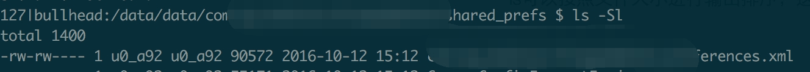
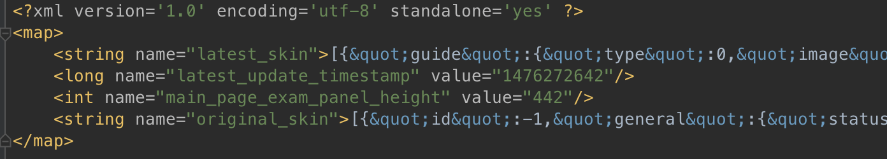

SharedPreference是Android上一种非常易用的轻量级存储方式，由于其API及其友好，得到了很多很多开发者的青睐。但是，SharedPreference并不是万能的，如果把它用在不合适的使用场景，那么将会带来灾难性的后果；本文将讲述一些SharedPreference的使用误区。
存储超大的value
第一次看到下面这个sp的时候，我的内心是崩溃的：

一个默认的sp有90K，当我打开它的时候，我都快哭了：除了零零星星的几个很小的key之外，存储了一个炒鸡大的key，这一个key至少占了其中的89K。知道这是什么概念吗？
在小米1S这种手机上，就算获取这个sp里面一个很小的key，会花费120+ms！！那个毫不相干的key拖慢了其他所有key的读取速度！当然，在性能稍好的手机上，这个问题不是特别严重。但是要知道，120ms这个是完全不能忍的！
之所以说SharedPreference（下文简称sp）是一种轻量级的存储方式，是它的设计所决定的：sp在创建的时候会把整个文件全部加载进内存，如果你的sp文件比较大，那么会带来两个严重问题：
- 第一次从sp中获取值的时候，有可能阻塞主线程，使界面卡顿、掉帧。
- 解析sp的时候会产生大量的临时对象，导致频繁GC，引起界面卡顿。
- 这些key和value会永远存在于内存之中，占用大量内存。
也许有童鞋会说，sp的加载不是在子线程么，怎么会卡住主线程？子线程IO就一定不会阻塞主线程吗？
下面是默认的sp实现SharedPreferenceImpl这个类的getString函数：
1
2
3
4
5
6
7
| public String getString(String key, @Nullable String defValue) {
synchronized (this) {
awaitLoadedLocked();
String v = (String)mMap.get(key);
return v != null ? v : defValue;
}
}
|
继续看看这个awaitLoadedLocked：
1
2
3
4
5
6
7
8
| private void awaitLoadedLocked() {
while (!mLoaded) {
try {
wait();
} catch (InterruptedException unused) {
}
}
}
|
一把锁就是挂在那里！！这意味着，如果你直接调用getString，主线程会等待加载sp的那么线程加载完毕！这不就把主线程卡住了么？
另外，有一个叫诀窍可以节省一下等待的时间：既然getString之类的操作会等待sp加载完成，而加载是在另外一个线程执行的，我们可以让sp先去加载，做一堆事情，然后再getString！如下：
1
2
3
4
5
6
7
8
| // 先让sp去另外一个线程加载
SharedPreferences sp = getSharedPreferences("test", MODE_PRIVATE);
// 做一堆别的事情
setContentView(testSpJson);
// ...
// OK,这时候估计已经加载完了吧,就算没完,我们在原本应该等待的时间也做了一些事!
String testValue = sp.getString("testKey", null);
|
更为严重的是，被加载进来的这些大对象，会永远存在于内存之中，不会被释放。我们看看ContextImpl这个类，在getSharedPreference的时候会把所有的sp放到一个静态变量里面缓存起来：
1
2
3
4
5
6
7
8
9
10
11
12
13
14
| private ArrayMap<File, SharedPreferencesImpl> getSharedPreferencesCacheLocked() {
if (sSharedPrefsCache == null) {
sSharedPrefsCache = new ArrayMap<>();
}
final String packageName = getPackageName();
ArrayMap<File, SharedPreferencesImpl> packagePrefs = sSharedPrefsCache.get(packageName);
if (packagePrefs == null) {
packagePrefs = new ArrayMap<>();
sSharedPrefsCache.put(packageName, packagePrefs);
}
return packagePrefs;
}
|
注意这个static的sSharedPrefsCache，它保存了你所有使用的sp，然后sp里面有一个成员mMap保存了所有的键值对；这样，你程序中使用到的那些个sp永远就呆在内存中，是不是不寒而栗？！
所以，请不要在sp里面存储炒鸡大的key碰到这样的猪队友，请让他自行检讨！！赶紧把自家App检查一下！！
存储JSON等特殊符号很多的value
还有一些童鞋，他在sp里面存json或者HTML；这么做不是不可以，但是，如果这个json相对较大，那么也会引起sp读取速度的急剧下降。
JSON或者HTML格式存放在sp里面的时候，需要转义，这样会带来很多&这种特殊符号，sp在解析碰到这个特殊符号的时候会进行特殊的处理，引发额外的字符串拼接以及函数调用开销。而JSON本来就是可以用来做配置文件的，你干嘛又把它放在sp里面呢？多此一举。下面我写个demo验证一下。
下面这个sp是某个app的换肤配置：

我们先用sp进行读取，然后用直接把它丢json文件，直接读取并且解析；json使用的代码如下：
1
2
3
4
5
6
7
8
9
10
11
12
13
14
15
16
17
18
19
20
21
22
23
24
25
26
27
28
| public int getValueByJson(Context context, String key) {
File jsonFile = new File(context.getFilesDir().getParent() + File.separator + SP_DIR_NAME, "skin_beta2.json");
FileInputStream fis = null;
ByteArrayOutputStream bao = new ByteArrayOutputStream();
try {
fis = new FileInputStream(jsonFile);
FileChannel channel = fis.getChannel();
ByteBuffer buffer = ByteBuffer.allocate(1 << 13); // 8K
int i1;
while ((i1 = channel.read(buffer)) != -1) {
buffer.flip();
bao.write(buffer.array(), 0, i1);
buffer.clear();
}
String content = bao.toString();
JSONObject jsonObject = new JSONObject(content);
return jsonObject.getInt(key);
} catch (IOException e) {
e.printStackTrace();
} catch (JSONException e) {
throw new RuntimeException("not a json file");
} finally {
close(fis);
close(bao);
}
return 0;
}
|
然后我的测试结果是：直接解析JSON比在xml里面要快一倍！在小米1S上结果如下：
| 时间 |
json |
sp |
| Mi 1S |
80 |
38 |
| Nexus5X |
3.5 |
6.5 |
这个JSON的读取还没有做任何的优化，提升潜力巨大！因此，如果你需要用JSON做配置，请不要把它存放在sp里面！！
多次edit多次apply
我见过这样的使用代码：
1
2
3
4
5
| SharedPreferences sp = getSharedPreferences("test", MODE_PRIVATE);
sp.edit().putString("test1", "sss").apply();
sp.edit().putString("test2", "sss").apply();
sp.edit().putString("test3", "sss").apply();
sp.edit().putString("test4", "sss").apply();
|
每次edit都会创建一个Editor对象，额外占用内存；当然多创建几个对象也影响不了多少；但是，多次apply也会卡界面你造吗？
有童鞋会说，apply不是在别的线程些磁盘的吗，怎么可能卡界面？我带你仔细看一下源码。
1
2
3
4
5
6
7
8
9
10
11
12
13
14
15
16
17
18
19
20
21
22
23
| public void apply() {
final MemoryCommitResult mcr = commitToMemory();
final Runnable awaitCommit = new Runnable() {
public void run() {
try {
mcr.writtenToDiskLatch.await();
} catch (InterruptedException ignored) {
}
}
};
QueuedWork.add(awaitCommit);
Runnable postWriteRunnable = new Runnable() {
public void run() {
awaitCommit.run();
QueuedWork.remove(awaitCommit);
}
};
SharedPreferencesImpl.this.enqueueDiskWrite(mcr, postWriteRunnable);
notifyListeners(mcr);
}
|
注意两点，第一，把一个带有await的runnable添加进了QueueWork类的一个队列；第二，把这个写入任务通过enqueueDiskWrite丢给了一个只有单个线程的线程池执行。
到这里一切都OK，在子线程里面写入不会卡UI。但是，你去ActivityThread类的handleStopActivity里看一看：
1
2
3
4
5
6
7
8
9
10
| private void handleStopActivity(IBinder token, boolean show, int configChanges, int seq) {
// 省略无关。。
// Make sure any pending writes are now committed.
if (!r.isPreHoneycomb()) {
QueuedWork.waitToFinish();
}
// 省略无关。。
}
|
waitToFinish?? 又要等？源码如下：
1
2
3
4
5
6
| public static void waitToFinish() {
Runnable toFinish;
while ((toFinish = sPendingWorkFinishers.poll()) != null) {
toFinish.run();
}
}
|
还记得这个toFinish的Runnable是啥吗？就是上面那个awaitCommit它里面就一句话，等待写入线程！！如果在Activity Stop的时候，已经写入完毕了，那么万事大吉，不会有任何等待，这个函数会立马返回。但是，如果你使用了太多次的apply，那么意味着写入队列会有很多写入任务，而那里就只有一个线程在写。当App规模很大的时候，这种情况简直就太常见了！
因此，虽然apply是在子线程执行的，但是请不要无节制地apply；commit我就不多说了吧？直接在当前线程写入，如果你在主线程干这个，小心挨揍。
用来跨进程
还有童鞋发现sp有一个貌似可以提供「跨进程」功能的FLAG——MODE_MULTI_PROCESS,我们看看这个FLAG的文档：
@deprecated MODE_MULTI_PROCESS does not work reliably in
some versions of Android, and furthermore does not provide any mechanism for reconciling concurrent modifications across processes. Applications should not attempt to use it. Instead, they should use an explicit cross-process data management approach such as {@link android.content.ContentProvider ContentProvider}.
文档也说了，这玩意在某些Android版本上不可靠，并且未来也不会提供任何支持，要是用跨进程数据传输需要使用类似ContentProvider的东西。而且，SharedPreference的文档也特别说明：
Note: This class does not support use across multiple processes.
那么我们姑且看一看，设置了这个Flag到底干了啥；在SharedPreferenceImpl里面，没有发现任何对这个Flag的使用；然后我们去ContextImpl类里面找找getSharedPreference的时候做了什么：
1
2
3
4
5
6
7
8
9
10
11
12
13
14
15
16
17
18
19
20
21
22
| @Override
public SharedPreferences getSharedPreferences(File file, int mode) {
checkMode(mode);
SharedPreferencesImpl sp;
synchronized (ContextImpl.class) {
final ArrayMap<File, SharedPreferencesImpl> cache = getSharedPreferencesCacheLocked();
sp = cache.get(file);
if (sp == null) {
sp = new SharedPreferencesImpl(file, mode);
cache.put(file, sp);
return sp;
}
}
if ((mode & Context.MODE_MULTI_PROCESS) != 0 ||
getApplicationInfo().targetSdkVersion < android.os.Build.VERSION_CODES.HONEYCOMB) {
// If somebody else (some other process) changed the prefs
// file behind our back, we reload it. This has been the
// historical (if undocumented) behavior.
sp.startReloadIfChangedUnexpectedly();
}
return sp;
}
|
这个flag保证了啥？保证了在API 11以前的系统上，如果sp已经被读取进内存，再次获取这个sp的时候，如果有这个flag，会重新读一遍文件，仅此而已！所以，如果仰仗这个Flag做跨进程存取，简直就是丢人现眼。
小结
总价一下，sp是一种轻量级的存储方式，使用方便，但是也有它适用的场景。要优雅滴使用sp，要注意以下几点：
- 不要存放大的key和value！我就不重复三遍了，会引起界面卡、频繁GC、占用内存等等，好自为之！
- 毫不相关的配置项就不要丢在一起了！文件越大读取越慢，不知不觉就被猪队友给坑了；蓝后，放进defalut的那个简直就是愚蠢行为！
- 读取频繁的key和不易变动的key尽量不要放在一起，影响速度。（如果整个文件很小，那么忽略吧，为了这点性能添加维护成本得不偿失）
- 不要乱edit和apply，尽量批量修改一次提交！
- 尽量不要存放JSON和HTML，这种场景请直接使用json！
- 不要指望用这货进行跨进程通信！！！
{kind=link}
{kind=link}